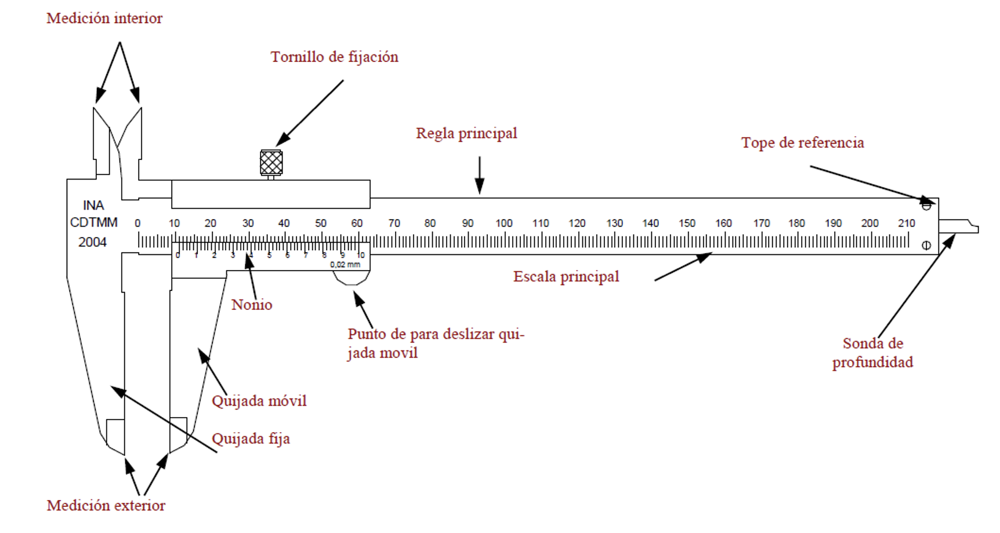
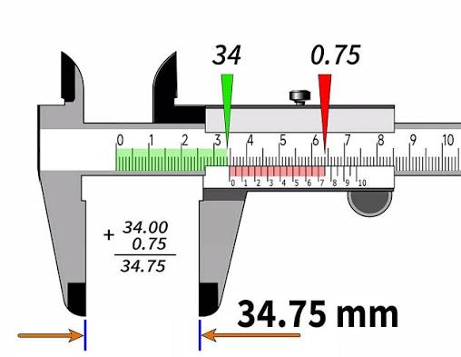
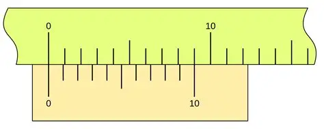

IES Valle del Alberche

📋 ¿Qué es un calibre (nonius)?
El calibre, también llamado pie de rey o calibre Vernier, es un instrumento de medida de longitud que permite medir con una precisión mucho mayor que una regla convencional. Con una regla normal, la precisión es de 1 mm; con un calibre, podemos llegar a 0,1 mm, 0,05 mm o incluso 0,02 mm.
Su nombre completo es calibre con nonius, en honor a Pierre Vernier (1580–1637), el matemático francés que en 1631 inventó el sistema de escala auxiliar que lleva su nombre. Fue una idea genial: con una escala corta que se desliza sobre una escala principal, se multiplica la precisión sin necesidad de construir una escala principal más fina.
¿Cómo puede un instrumento metálico sencillo medir hasta 0,02 mm con solo mirar dos escalas?


🎯 ¿Qué vas a aprender?
- Qué es un calibre (nonius) y para qué sirve.
- El fundamento matemático del nonius: por qué funciona.
- Los distintos tipos de medidas que se pueden hacer: exteriores, interiores y profundidad.
- Cómo se lee correctamente la medida con un calibre.
- Los distintos tipos de calibre según su precisión (0,1 mm; 0,05 mm; 0,02 mm).
- Qué es un nonius de segunda especie o alargado y por qué algunos calibres de 0,05 mm llevan 20 divisiones sobre 39 mm.
- Apreciar la originalidad de la idea de Vernier y su presencia en otros instrumentos (micrómetro, sextante, etc.).
🔬 Fundamento del nonius: la idea genial de Vernier
Imagina que quieres medir la anchura de un tornillo y obtienes 7,3 mm. Con una regla normal solo puedes decir "un poco más de 7 mm", pero no sabes exactamente cuánto. La escala no tiene subdivisiones tan finas. Y hacer una regla con divisiones de 0,1 mm sería carísimo y difícil de leer.
Vernier tuvo una idea brillante: en lugar de hacer la escala principal más fina, añadir una escala auxiliar que permita leer las fracciones.
El nonius es una pequeña escala que se desliza a lo largo de la escala principal. Se construye de la siguiente manera:
- La escala principal tiene divisiones de \( 1\ \mathrm{mm} \).
- El nonius tiene \( n \) divisiones que ocupan exactamente \( n-1 \) divisiones de la escala principal.
- Es decir, el nonius "comprime" \( n-1 \) milímetros en \( n \) divisiones.
De este modo, cada división del nonius mide \( \dfrac{n-1}{n}\ \mathrm{mm} \), ligeramente menos que 1 mm.
\[ a = 1\ \mathrm{mm} - \frac{n-1}{n}\ \mathrm{mm} = \frac{1}{n}\ \mathrm{mm} \]
Esa diferencia \( a \) es la precisión (o apreciación) del calibre.
El calibre más común tiene un nonius de 10 divisiones que abarcan 9 mm de la escala principal. Por tanto:
El nonius divide el milímetro en 10 partes. Cada línea del nonius está separada de la línea siguiente de la escala principal por 0,1 mm. Cuando una línea del nonius coincide exactamente con una línea de la escala principal, sabemos que la medida tiene una fracción decimal exacta de 0,1 mm.

| Tipo de nonius | Divisiones (\(n\)) | Longitud que abarca | División del nonius | Precisión (\( a \)) | Uso típico |
|---|---|---|---|---|---|
| 1.ª especie | 10 | 9 mm | 0,90 mm | 0,10 mm | Calibre escolar básico |
| 1.ª especie | 20 | 19 mm | 0,95 mm | 0,05 mm | Calibre de taller |
| 2.ª especie | 20 | 39 mm | 1,95 mm | 0,05 mm | Calibre de taller (lectura más cómoda) |
| 1.ª especie | 50 | 49 mm | 0,98 mm | 0,02 mm | Calibre de precisión |
Hasta ahora hemos visto el nonius clásico o de primera especie: \( n \) divisiones del nonius que abarcan \( n-1 \) divisiones de la escala principal. Pero existe otra variante muy usada, el nonius de segunda especie (también llamado nonius alargado), en el que las \( n \) divisiones del nonius abarcan \( 2n-1 \) divisiones de la escala principal.
En este caso, cada división del nonius mide:
y la comparación que da la precisión ya no se hace contra 1 mm, sino contra 2 mm (dos divisiones de la escala principal):
¡La precisión sigue siendo exactamente \( 1/n \) mm! Lo único que cambia es que las divisiones del nonius son casi el doble de grandes, porque en lugar de "comprimir" \( n-1 \) milímetros en \( n \) huecos, comprime \( 2n-1 \) milímetros en esos mismos \( n \) huecos.
Este es el calibre que hemos utilizado en el laboratorio: un calibre cuyo nonius tiene 20 divisiones (10 divisiones numeradas, cada una subdividida por una línea intermedia) y que abarca 39 mm de la escala principal.
1) ¿Es un nonius de segunda especie?
Sustituyendo \( n = 20 \) en la fórmula del nonius alargado:
Coincide exactamente con los 39 mm que abarca tu nonius. Por tanto, tu calibre monta un nonius de segunda especie con \( n = 20 \) divisiones. No es un capricho del fabricante: es una construcción perfectamente tipificada.

2) ¿Cómo está construido? (su "formación")
- Se toma sobre la escala principal una longitud de 39 mm (39 divisiones de 1 mm).
- Esa longitud se divide en 20 intervalos iguales: cada intervalo mide \( 39/20 = 1{,}95\ \mathrm{mm} \).
- Se trazan, por tanto, 21 líneas (de la 0 a la 20).
- Las líneas pares (0, 2, 4, …, 20) se numeran de 0 a 10: son las 10 divisiones "grandes" del nonius.
- Las líneas impares (1, 3, 5, …, 19) quedan como divisiones intermedias, sin numerar.
De esta forma:
- Cada división numerada vale \( 2 \times 0{,}05 = 0{,}10\ \mathrm{mm} \).
- Cada división intermedia vale \( 0{,}05\ \mathrm{mm} \).
- El nonius completo abarca \( 20 \times 0{,}05 = 1{,}00\ \mathrm{mm} \) de lectura.
3) La comparación que da la precisión
Fíjate en el "desfase" entre las dos escalas:
Esa diferencia de 0,05 mm es la apreciación o resolución del calibre. Cada vez que el cursor avanza 0,05 mm, la línea del nonius que coincide con una línea principal "salta" a la siguiente.
4) Verificación con el calibre cerrado
Cuando el calibre está cerrado, el cero del nonius coincide con el cero de la escala principal. Entonces:
- La línea 0 del nonius coincide con 0 mm.
- La línea 20 (la que lleva el número 10) coincide con 39 mm de la escala principal.
- Ninguna otra línea del nonius coincide con una línea principal: todas están desplazadas 0,05 mm, 0,10 mm, 0,15 mm…
Si al cerrar tu calibre observas exactamente esto, el instrumento está bien construido y su error de cero es nulo. Si la línea 20 no cae sobre 39 mm, el nonius no es de este tipo (o está mal fabricado).
5) Resolución y alcance
| Característica | Valor |
|---|---|
| Divisiones del nonius (\(n\)) | 20 |
| Longitud que abarca | 39 mm (= \(2n-1\)) |
| División del nonius (\(v\)) | 1,95 mm |
| Comparación | 2 mm − 1,95 mm |
| Resolución (apreciación) | 0,05 mm |
| Alcance del nonius (fracción de mm que lee) | 1,00 mm |
| Alcance total del calibre | el de su regla (normalmente 150 mm) |
6) Ejemplo de lectura con tu calibre
Medimos una pieza y observamos:
- La última línea de la escala principal a la izquierda del cero del nonius es 23 mm.
- La línea del nonius que coincide exactamente es la 9.ª (esto es, el número 4 más una línea intermedia).
Resultado: \( (23{,}45 \pm 0{,}05)\ \mathrm{mm} \).
7) ¿Por qué se fabrica así y no con 19 mm?
Un nonius de primera especie con \( n = 20 \) daría la misma precisión (0,05 mm) abarcando solo 19 mm, con divisiones de 0,95 mm. En cambio, el de 39 mm tiene divisiones de 1,95 mm. Las ventajas son:
- Líneas más separadas: 1,95 mm frente a 0,95 mm. Se graban mejor y se leen sin esfuerzo, incluso con poca luz o vista cansada.
- Menos error de paralaje: al estar las líneas más separadas, la lectura depende menos del ángulo de visión.
- Coincidencia más fácil de identificar: la "batida" entre las dos escalas es más clara y menos confusa que cuando las divisiones de ambas escalas casi coinciden en tamaño.
- Misma precisión: 0,05 mm, sin necesidad de fabricar una escala principal más fina.
El único inconveniente es que el cursor es más largo y el calibre resulta algo más voluminoso y algo más caro de fabricar.
Al medir un objeto, el cero del nonius se coloca en algún punto entre dos divisiones de la escala principal. La medida exacta tiene una parte entera (los milímetros completos que han quedado a la izquierda del cero) y una parte decimal (la fracción de milímetro).
Para saber esa fracción, solo hay que buscar qué línea del nonius coincide exactamente con una línea de la escala principal. Esa coincidencia nos dice cuántas décimas (o centésimas, según el calibre) hay que añadir.
\[ L = L_{\text{principal}} + (n \cdot a) \]
donde \( L_{\text{principal}} \) es la última división de la escala principal antes del cero del nonius, \( n \) es el número de la línea del nonius que coincide, y \( a \) es la precisión del calibre.
La idea de Vernier es asombrosa porque, con muy poco, consigue mucho. No hace falta fabricar una escala con miles de divisiones microscópicas: basta con una escala auxiliar corta y bien diseñada. Con ella:
- Se multiplica la precisión por 10, 20 o 50 según convenga.
- Se puede leer a simple vista (con buena iluminación), sin necesidad de instrumentos ópticos.
- Es un sistema universal: sirve para longitudes, ángulos, presiones, etc.
- Ha sobrevivido casi 400 años sin cambios esenciales: los calibres actuales siguen usando el mismo principio.
El nonius también se usa en el sextante (para medir ángulos en navegación), en algunos micrómetros, en esferómetros, en gonios y en instrumentos astronómicos antiguos. Fue una contribución fundamental a la metrología.
📐 Los tres tipos de medidas que puedes hacer con un calibre
Son las medidas más habituales. Se usan las dos mordazas grandes del calibre para abrazar el objeto por fuera. Sirven para medir:
- El diámetro exterior de un tubo, un tornillo o una barra.
- La anchura de una pieza plana.
- El espesor de una lámina, chapa o moneda.
- La longitud de un objeto pequeño.
Las mordazas se cierran suavemente sobre el objeto sin apretar, para no deformarlo ni forzar el instrumento.
En la parte superior del calibre, hay dos orejetas (también llamadas "picos pequeños" o "cuchillas") que se introducen dentro de un hueco. Sirven para medir:
- El diámetro interior de un tubo o una tuerca.
- La anchura de una ranura o de una garganta.
- La distancia entre paredes internas de un recipiente.
Al cerrar el calibre, las orejetas se separan y tocan las paredes internas del objeto. La lectura es directa, igual que en el caso exterior.
El calibre tiene una varilla o aguja solidaria al cursor que sobresale por el extremo opuesto a las mordazas. Sirve para medir:
- La profundidad de un agujero o de una cavidad.
- La profundidad de una ranura.
- El fondo de un recipiente o de un tubo cerrado por un extremo.
Se apoya el extremo del cuerpo del calibre sobre el borde del agujero y se desliza el cursor hasta que la varilla toque el fondo. La lectura nos da la profundidad.
| Función | Parte del calibre | Qué mide |
|---|---|---|
| Exterior | Mordazas grandes inferiores | Diámetros externos, espesores, anchuras |
| Interior | Orejetas pequeñas superiores | Diámetros internos, ranuras |
| Profundidad | Varilla posterior | Profundidad de agujeros y cavidades |
⚙️ Cómo se lee correctamente un calibre
- Limpia las mordazas y el objeto a medir.
- Comprueba el cero: cierra el calibre completamente y verifica que el cero del nonius coincide con el cero de la escala principal. Si no coincide, apunta el error de cero y corrígelo en todas las medidas.
- Coloca el objeto entre las mordazas y ciérralas suavemente, sin forzar.
Busca la última línea de la escala principal que queda a la izquierda del cero del nonius. Ese número, en milímetros, es la parte entera de la medida.
Recorre las líneas del nonius de izquierda a derecha y busca la que coincide exactamente con una línea de la escala principal. El número de esa línea del nonius (1, 2, 3, ...) multiplicado por la precisión del calibre te da la parte decimal.
Suma la parte entera y la parte decimal para obtener la medida total:
Y resta el posible error de cero que hayas detectado al principio.
Supongamos que estamos midiendo con un calibre de precisión \( a = 0{,}1\ \mathrm{mm} \):
- La última división principal a la izquierda del cero del nonius es la de 17 mm.
- La línea del nonius que coincide con una línea principal es la 4ª.
Resultado: el objeto mide \( 17{,}4\ \mathrm{mm} \).
- Confundir las escalas: leer la escala principal cuando se cree leer el nonius, o al revés.
- Contar mal las líneas del nonius: hay que empezar a contar desde la primera línea después del cero del nonius.
- Elegir una línea que "casi" coincide: solo vale la que coincide exactamente. Si hay duda, hay que mirar con luz rasante o con lupa.
- Forzar el calibre: si se aprieta demasiado, el objeto se deforma y la medida sale mal.
- Olvidar el error de cero: si el calibre no marca cero cuando está cerrado, hay que corregirlo.
📊 Resumen para llevar en el bolsillo
El calibre (nonius) mide longitudes con precisión de 0,1 mm, 0,05 mm o 0,02 mm.
El nonius es una escala auxiliar de \( n \) divisiones que abarca \( n-1 \) divisiones de la escala principal (1.ª especie) o \( 2n-1 \) divisiones (2.ª especie). En ambos casos, su precisión es \( a = 1/n \) mm.
Lectura: \( L = L_{\text{principal}} + (n \cdot a) \).
Tipos de medida: exteriores, interiores y profundidad.
Tu calibre: nonius de 2.ª especie, 20 divisiones sobre 39 mm → \( a = 0{,}05\ \mathrm{mm} \), con divisiones de 1,95 mm (mucho más legibles que las de 0,95 mm del nonius clásico de 19 mm).
🧪 DESMITIFICANDO el calibre (nonius) Pulsame
Enunciado: Un calibre tiene un nonius de 20 divisiones que abarcan 19 mm de la escala principal. ¿Cuál es su precisión?
Enunciado: Con un calibre de precisión 0,1 mm medimos un tornillo. La última línea principal a la izquierda del cero del nonius es la de 12 mm. La línea del nonius que coincide es la 7ª. ¿Cuánto mide el tornillo?
Enunciado: Queremos medir el diámetro interior de un tubo de cobre. Usamos las orejetas superiores del calibre. La última línea principal a la izquierda del cero del nonius marca 22 mm, y la 3ª línea del nonius coincide exactamente con una línea principal. El calibre tiene precisión 0,05 mm. ¿Cuál es el diámetro interior?
Enunciado: Con la varilla de profundidad del calibre medimos un agujero ciego. La última línea principal a la izquierda del cero del nonius marca 38 mm, y la 9ª línea del nonius coincide exactamente. El calibre tiene precisión 0,1 mm. ¿Cuál es la profundidad del agujero?
Enunciado: Un calibre, cerrado completamente, marca 0,2 mm (el cero del nonius está ligeramente a la derecha del cero principal). Al medir un objeto, la lectura aparente es de 15,3 mm. ¿Cuál es la medida real del objeto?
Enunciado: Explica, con el ejemplo de un objeto que mide 7,34 mm, por qué una regla graduada en milímetros no puede dar esa medida, mientras que un calibre con precisión 0,02 mm sí puede.
Enunciado: Se mide el diámetro exterior y el interior de un tubo con un calibre. El exterior da 25,4 mm y el interior 21,2 mm. ¿Cuál es el espesor de la pared del tubo? ¿Qué partes del calibre se han usado en cada caso?
Enunciado: Imagina que en 1631 quieres medir ángulos con precisión de 1 minuto de arco. Un círculo completo tiene 360° = 21 600 minutos. Fabricar un limbo graduado con 21 600 marcas era imposible. ¿Cómo resolvió Vernier el problema con su nonius?
Enunciado: Un calibre tiene un nonius de 20 divisiones que abarcan 39 mm de la escala principal. (a) ¿De qué especie es? (b) ¿Cuál es su precisión? (c) Si la última línea principal a la izquierda del cero del nonius es la de 47 mm y la línea del nonius que coincide exactamente es la 13.ª, ¿cuál es la medida de la pieza?
Una idea de 1631 que sigue dando medidas exactas casi 400 años después. La buena ciencia no caduca.
(Los detalles sobre lo que entra en las pruebas escritas se publicarán periódicamente en M.Teams).